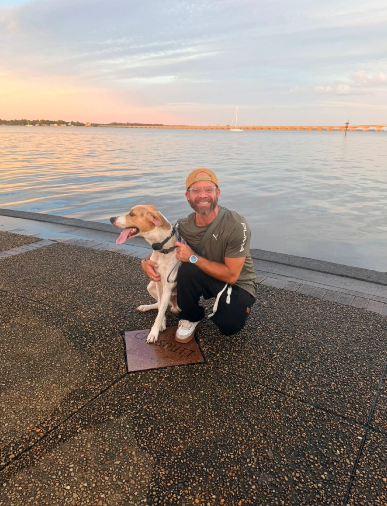

The Bear Town Pack is a small New Bern network. We find somebody who is genuinely good at looking after animals, we vouch for them, we build them a real website they own, and we put their name in front of the neighbors already searching for it.

One at a time, on purpose. Everybody here is somebody we know.
Teresa came up through a boarding kennel on Race Track Road and works at a veterinary office in New Bern now. Medication schedules, senior dogs, and cats who hide are ordinary Tuesdays for her. She looks after our own dog, Reese.
If you look after animals in Craven County — sitting, walking, grooming, training, boarding, rescue, fostering — this is the whole arrangement.
| Your month | You pay |
|---|---|
| Under $1,500 | $50 |
| $1,500 – $3,499 | $100 |
| $3,500 – $6,499 | $200 |
| $6,500 and up | $325 |
It goes up only after two months in a band, comes down the first month you dip, and is capped at 5% of what you made. You tell us the band — we do not ask to see your books.
Put these in your phone before you need them. Every one of these numbers is answered by a person, and the two poison lines run 24 hours a day.
Do not wait to see how it goes. With most poisonings the window that matters is measured in minutes, not hours, and calling costs you nothing but the call. Never make an animal vomit unless a vet or a poison line tells you to — with some substances it does more damage coming back up.
Not scare stories. Every one of these is something we have watched a good owner get caught by.
The sweetener in sugar‑free gum, mints, some peanut butters and many “keto” foods. In a dog it can crash blood sugar within 30 minutes and cause liver failure. Read the label on peanut butter before it goes in a Kong.
There is no established safe dose. Some dogs eat a handful and are fine, some eat a few and go into kidney failure, and nobody can tell you in advance which dog you have. Treat any amount as a phone call.
Raw, cooked, powdered or in gravy — they damage red blood cells in both dogs and cats, and cats are more sensitive. The danger is usually the leftovers, not the meal.
True lilies — Easter, Tiger, Day, Asiatic — cause kidney failure in cats. Not just eating the plant: pollen on the fur, licked off while grooming, is enough. If you have a cat, do not have lilies in the house.
Ethylene glycol is sweet, animals will drink a spill on purpose, and a very small amount causes kidney failure. Symptoms can look like drunkenness. This is one of the fastest emergencies there is — hours matter.
Ibuprofen, naproxen and paracetamol are dangerous to dogs and cats even in small doses, and paracetamol is especially lethal to cats. Never give a human painkiller to an animal without a vet telling you the drug and the dose.
A car at 70°F outside passes 100°F inside in about twenty minutes, and cracking a window barely changes it. And check the ground with the back of your hand: if you cannot hold it there for seven seconds, it will burn their pads. In a New Bern July, asphalt at noon is not walkable.
Late summer, warm slow water, a green or blue paint‑like scum at the edge. The toxins can kill a dog within hours of a swim or a drink. If the water looks like somebody poured paint in it, keep them out of it — and rinse them off after any brackish swim regardless.
Coastal Carolina has mosquitoes most of the year, and heartworm is far cheaper to prevent than to treat — treatment is months of cage rest and real risk. Year‑round prevention, and a yearly test even if you never miss a dose.
Not every shelter takes animals. Know before the storm which one does, keep a carrier per animal, a week of food, medication and a copy of the rabies certificate together in one bag, and microchip them and keep the chip registration current — a collar comes off in flood water and a chip does not.
This page is written by people who love animals, not veterinarians. It is here to make you call sooner, never to replace the call. When you are unsure, ring your vet or one of the poison lines above.
These are the people doing the work here. We are not affiliated with any of them and we take nothing from any of them — go straight to them.
If you can only do one thing: the no‑kill shelter runs on donations and volunteers, and it is the one that runs out of money first. A share of what this network makes goes there.
Short, specific, and written before it was needed. Nothing here is generated — every one was written and checked by a person first.
Because that is what this place is called, and it has been since long before any of us.